Home › Galerij
Galerij
Een kijkje in de kamers, de buitenren en het dagelijkse leven van onze logees. Klik op een foto om hem groter te zien.
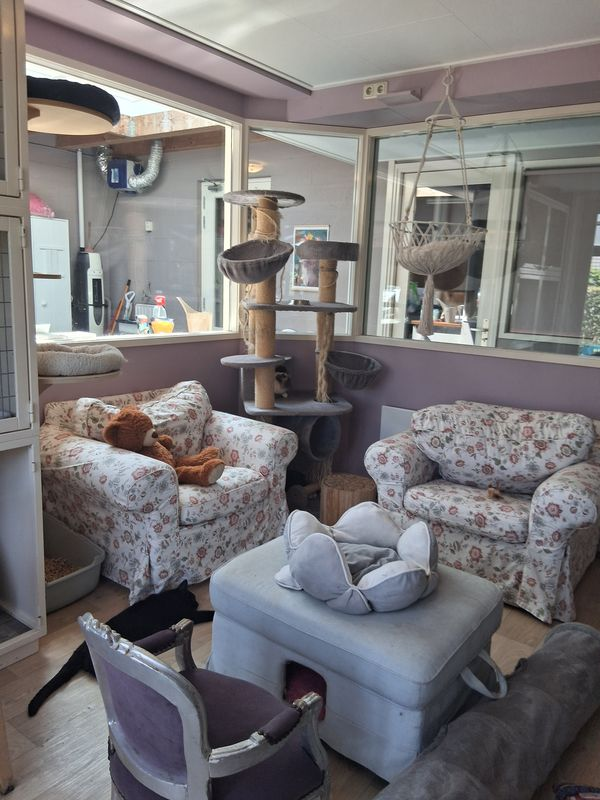
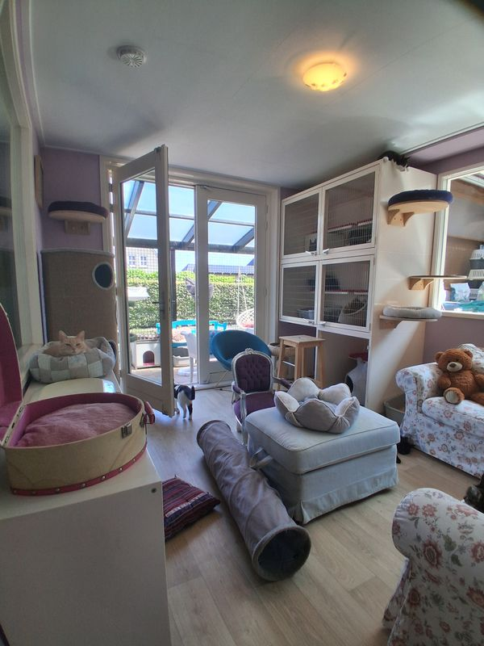
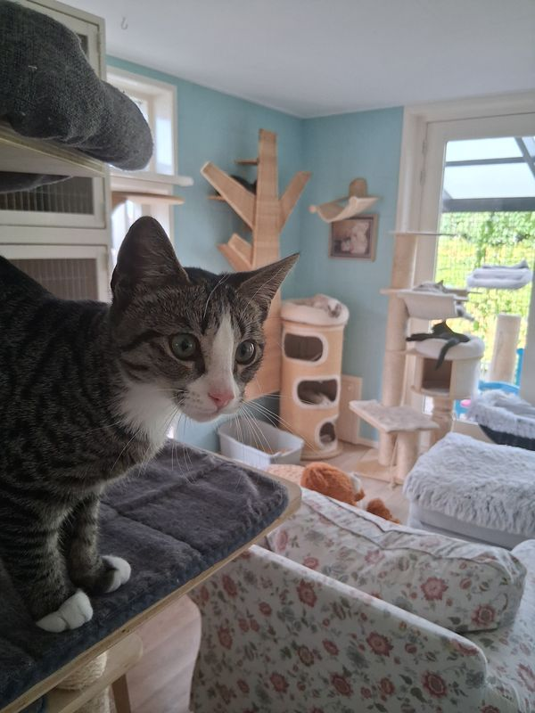
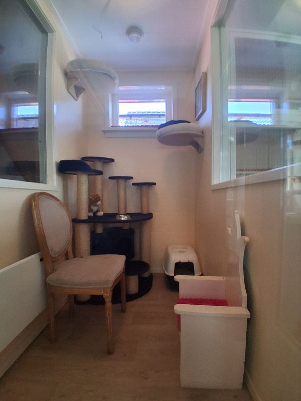
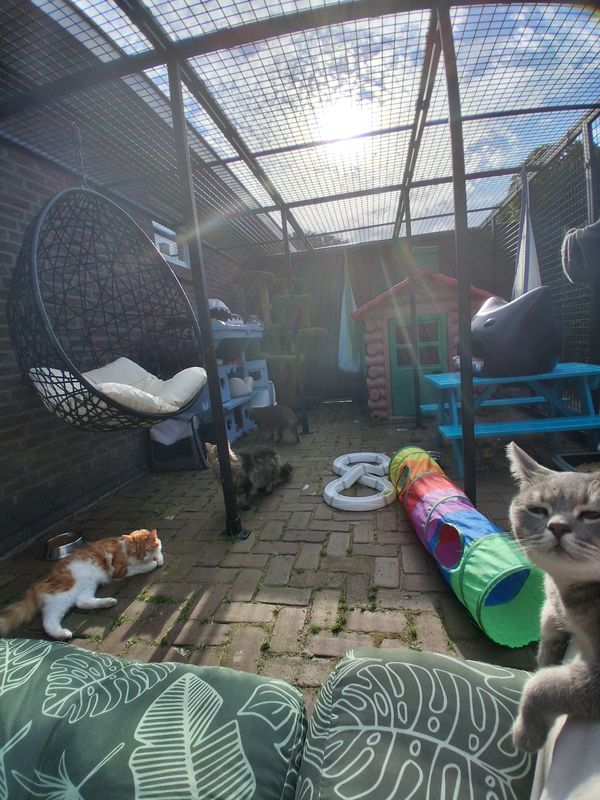
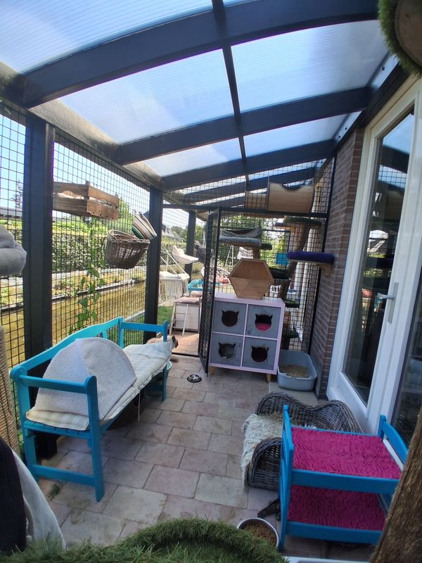
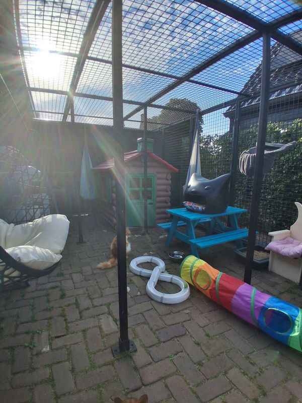
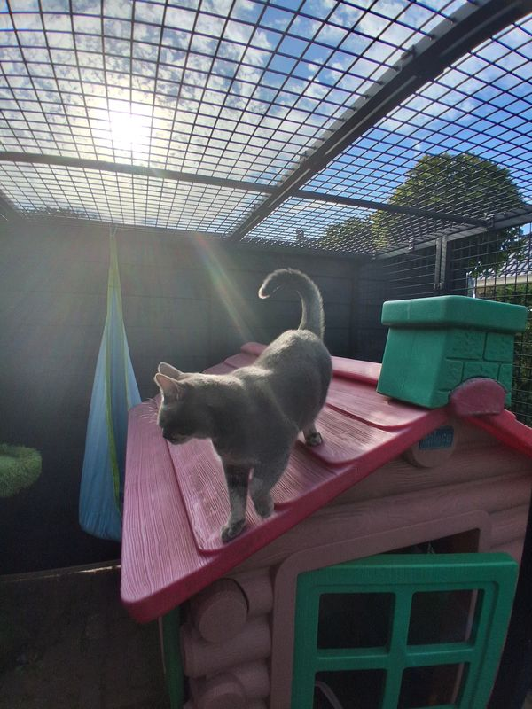
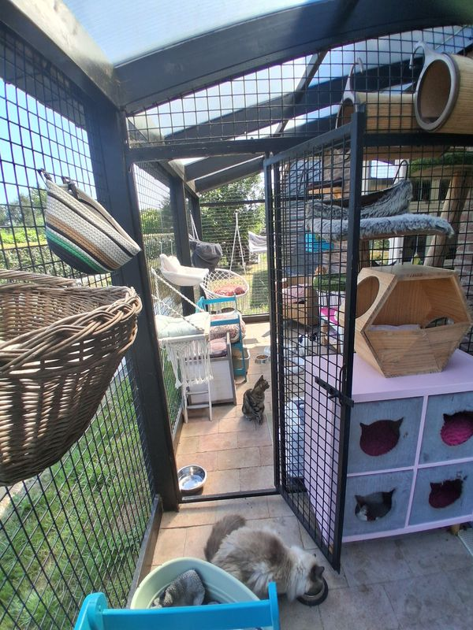
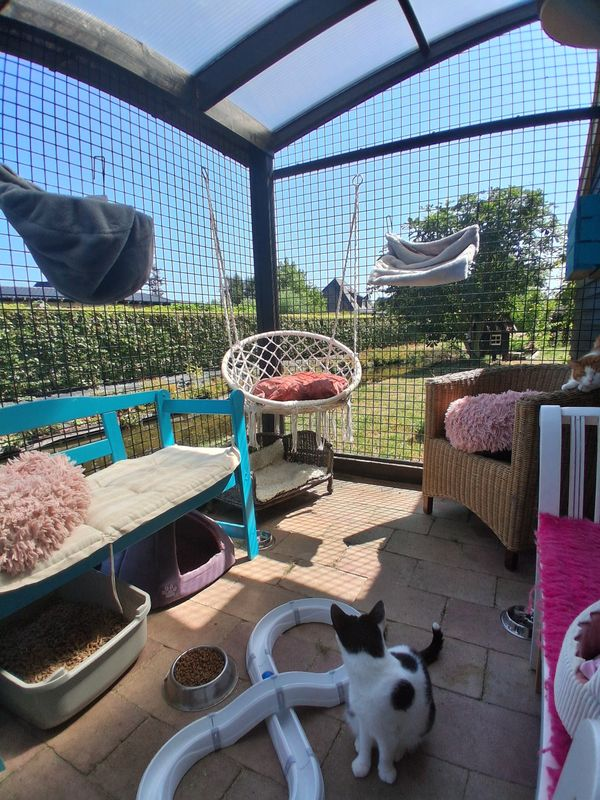
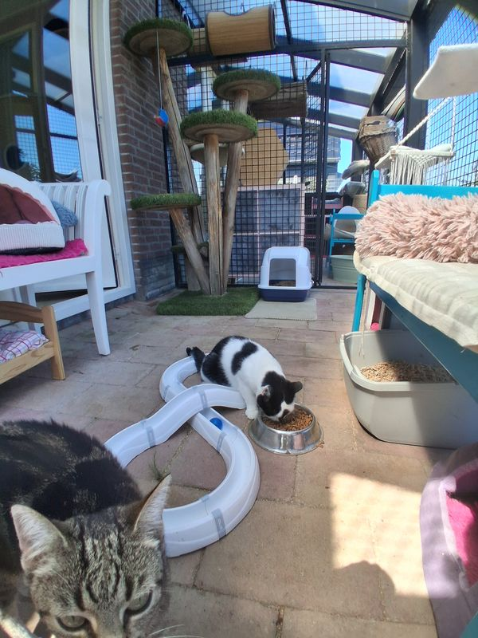
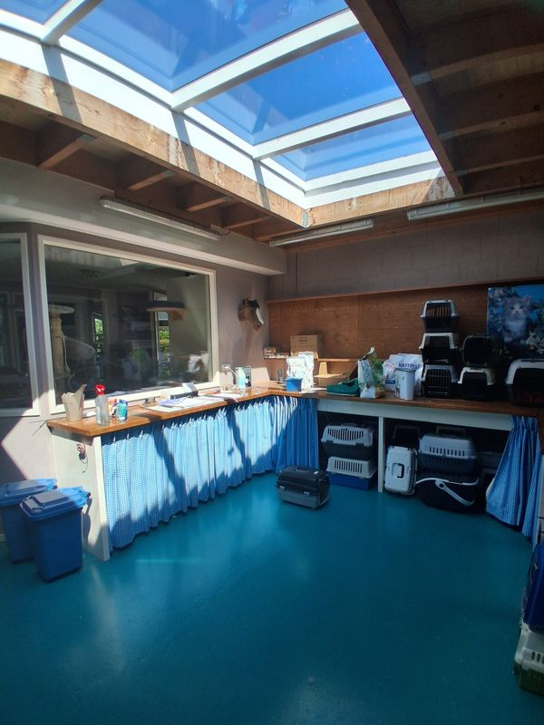
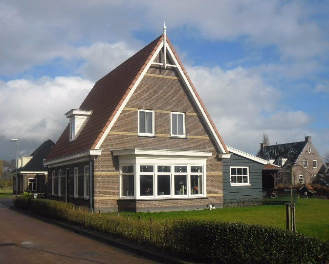
Eerst een kijkje komen nemen?
U bent van harte welkom om het pension te bezichtigen. Belt u even van tevoren, dan nemen we alle tijd voor u en uw vragen.